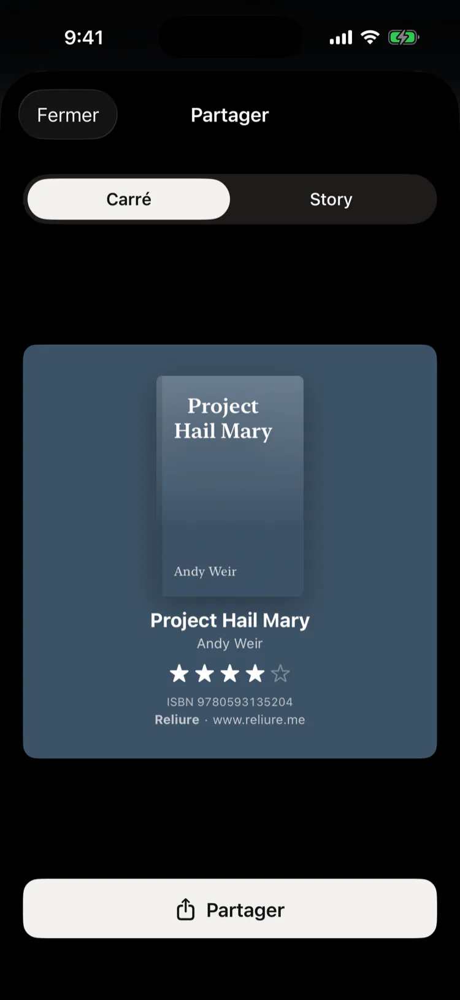
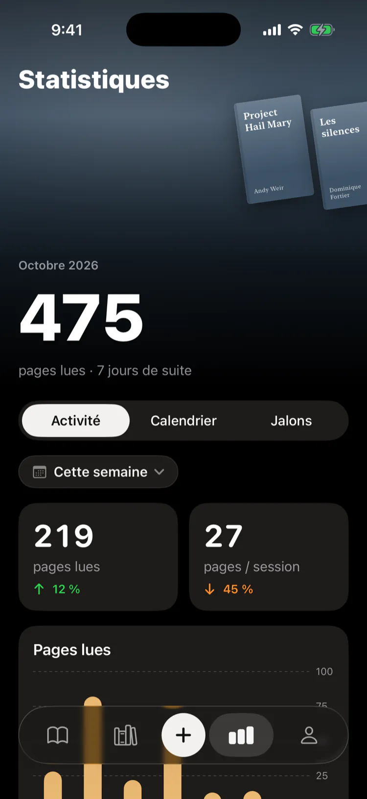
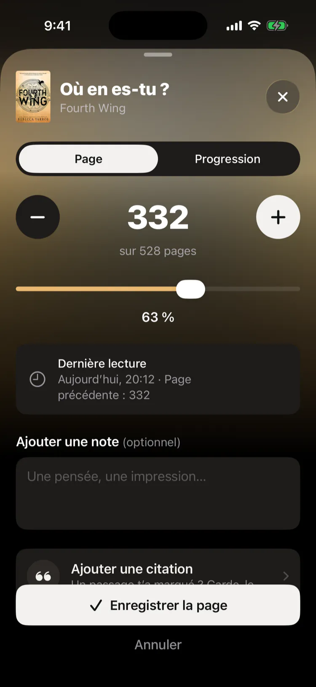
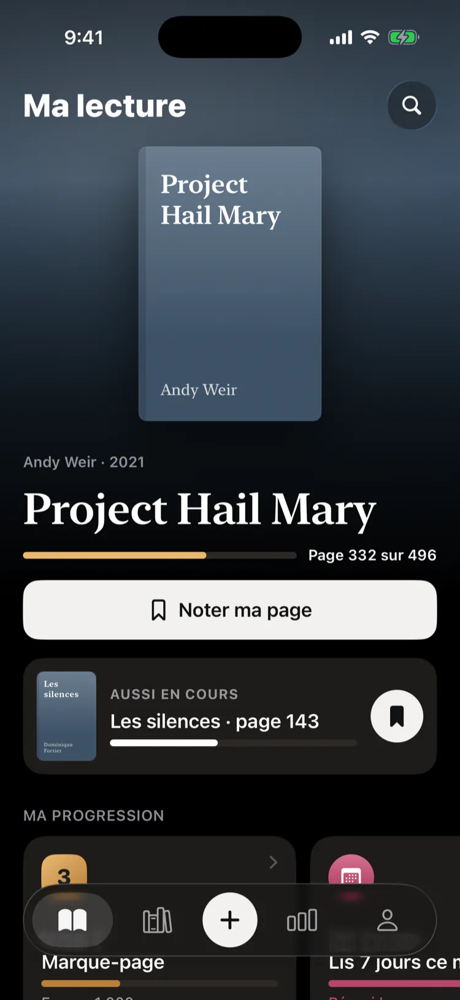
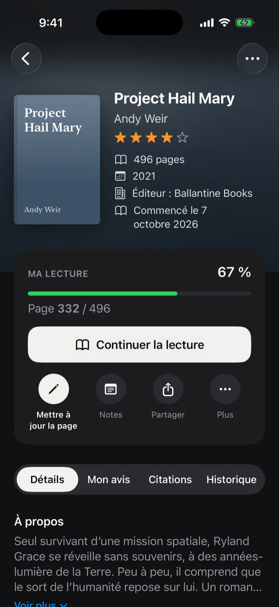
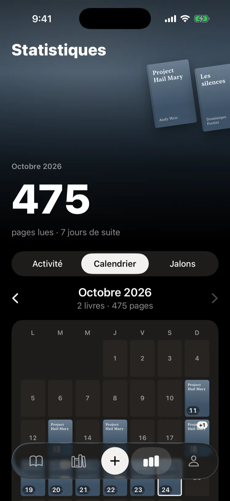
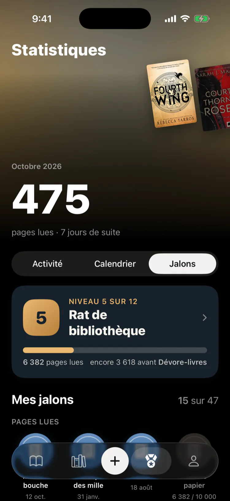

Toutes vos lectures, reliées
Gratuit. Sans compte, sans pub, sans abonnement.







Fonctionnalités
Scan
Ajoutez un livre par son code-barres
Pages
Votre page mise à jour d’un geste
Citations
Photographiez la page, gardez le passage
Évaluations
Globale ou par thème
Statistiques
Pages, séries et objectif annuel
Niveaux
Douze niveaux et un défi par mois
Widgets
Votre livre à l’écran verrouillé
Partage
Un livre ou votre année, en image
Goodreads
Importez, puis exportez en tout temps
Gratuit
Sans compte, sans pub, sans abonnement
Journal de lecture pour iPhone
Disponible sur l’App Store
Ouvrez Reliure dans l’App Store avec l’appareil photo de votre iPhone
Questions fréquentes
Reliure
Qu’est-ce que Reliure ?
Reliure est une app iPhone pour suivre les livres que vous lisez : votre bibliothèque, votre page en cours, vos sessions de lecture, vos notes, vos évaluations, vos statistiques et votre calendrier de lecture.
Compte
Faut-il créer un compte ?
Non. Reliure fonctionne sans compte ni inscription, et votre bibliothèque est enregistrée sur votre iPhone.
Prix
Reliure est-il gratuit ?
Oui. Reliure est gratuit, sans publicité, sans abonnement et sans compte. Certains liens vers des librairies, comme Amazon, peuvent être des liens affiliés : nous pouvons toucher une petite commission, sans frais pour vous.
Ajouter un livre
Comment ajouter un livre ?
Scannez le code-barres ISBN avec l’appareil photo, cherchez par titre ou auteur, ou entrez l’ISBN à la main. Reliure récupère les informations du livre dans Google Books, Open Library et le catalogue de la Bibliothèque nationale de France.
Progression
Comment suivre ma progression ?
Entrez votre page en cours ou un pourcentage, ou ajustez avec + et −. Chaque mise à jour devient une session de lecture, qui alimente vos statistiques et vos séries de jours.
Sauvegardes
Et si je change ou perds mon iPhone ?
Votre bibliothèque fait partie des sauvegardes iCloud de votre iPhone. Vous pouvez aussi exporter en tout temps un fichier de sauvegarde Reliure, avec vos livres, sessions, citations, notes et couvertures, et le restaurer sur un autre iPhone. L’app vous rappelle discrètement de faire une sauvegarde, sans notification.
Exportation
Puis-je emporter mes livres dans une autre app ?
Oui. Reliure exporte votre bibliothèque dans un fichier CSV au format Goodreads, que Goodreads et StoryGraph peuvent importer.
Goodreads
Puis-je importer ma bibliothèque Goodreads ?
Oui. Exportez votre bibliothèque Goodreads en fichier CSV, puis importez ce fichier dans Reliure.
Partage
Puis-je partager mes lectures ?
Oui. Partagez un livre, une citation, votre calendrier, un jalon ou votre année de lecture en image, carrée pour une publication ou verticale pour une story, avec Instagram, Messages ou toute autre app de votre iPhone.
Langues
En quelles langues Reliure est-il offert ?
En français et en anglais.
Android
Reliure est-il offert sur Android ?
Non. Reliure est offert sur iPhone.
Hors ligne
Reliure fonctionne-t-il hors ligne ?
Oui. Tout fonctionne sans connexion, sauf la recherche d’un livre en ligne par code-barres, titre ou auteur. Vous pouvez toujours ajouter un livre à la main.
Formats
Puis-je suivre des livres numériques ou audio ?
Reliure est pensé pour les livres imprimés, avec une progression suivie à la page.